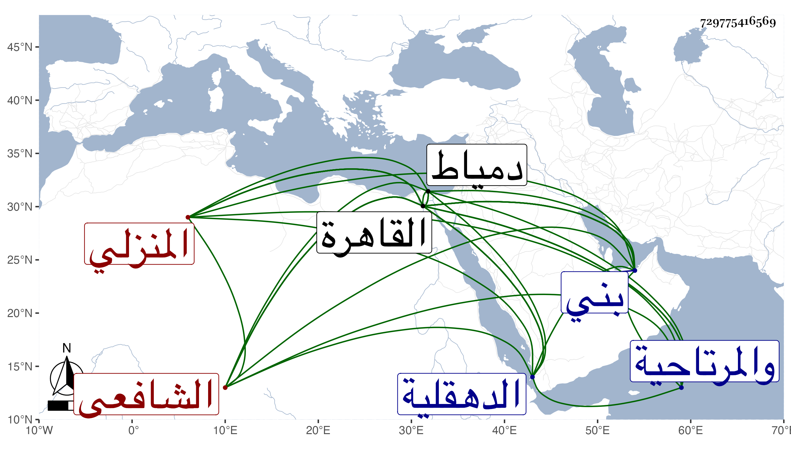

0902Sakhawi.DawLamic.ITO20230111-ara1.EIS1600.729775416569
Biography ID: 729775416569
92
محمد بن محمد بن يوسف بن يحيى ناصر الدين المنزلي الشافعي سبط سويدان وبه يشهر فيقال له ابن سويدان . ولد سنة ثمانين وسبعمائة بمنزلة بني حسون من أعمال الدهقلية والمرتاحية من أراضي القاهرة ونشأ بها فحفظ القرآن وصلى به والشاطبية وبعض عمدة الأحكام وجميع التبريزي والنهاية المنسوبة للنووي كلاهما في الفقه وربع العبادات والنكاح من المنهاج وبعض عمدة الشاشي وغالب ألفية ابن ملك وجميع المطرزية وبحث في الشاطبية على نور الدين النعيمي وأخذ النحو عن الشمس اليماني واعتنى بالنظم ، ودخل القاهرة غير مرة فأجاز له الولي العراقي ومدح الجلال البلقيني بقصيدة رائية طنانة فأعجبته وأجازه عليها وقال ليته يسكن القاهرة قال فشق قوله ذلك علي ثم أنى لم أر في بلادنا بعد عيشة مرضية فعددت ذلك كرامة له وجمع من نظمه ديوانا سماه كنز الوفا في مديح المصطفى واختصره وسماه جواهر الكنز المذخر في مدح خير البشر وكله من بحر الطويل ونظم فرائض المنهاج وسماه وجهة المحتاج ونزهة المنهاج قرضه له شيخنا وخمس البردة وبديعية الصفى الحلي تخميسا بديعا بحيث يظن أنهما لواحد وكذا خمس أبيات سيدي عبد القادر الكيلاني التي أولها ما في المناهل منهل يستعذب ونسخ بخطه الجيد الكثير كالصحيحين وغيرهما وولي نظر الناصرية بدمياط وسكنها مدة وكذا ولي قضاء المنزلة في سنة اثنتين أو ثلاث وأربعين ثم عزل ووقع بينه وبين قريبه نور الدين بن وحشية بحيث انتقل عنها لمنية ابن سلسيل وولي قضاءها وصرف بالبدر بن كميل ثم قدم القاهرة في سنة أربع وأربعين ليسعى وحدث بشيء من نظمه كتب عنه ابن فهد والبقاعي وغيرهما ، وكان شيخا بهيا وقورا متوددا مبجلا في ناحيته مستحضرا لكثير من اللغة مشاركا في النحو والبديع ذا خبرة تامة بالعروض مع الهيبة والسكون والكياسة والثروة . مات في يوم الجمعة قبل رمضان سنة اثنتين وخمسين بعد قراءته للناس مجلسا من الشفا رحمه الله وإيانا . ومن نظمه :
| ومليحة في الحي قد ألفيتها | وطلبتها من والديها عاريه |
| فاستعظما عار العواري قلت لا | أعني تكون من الملابس عارية |
وقوله :
| وظبية نفتر من بين معشرها | أشكو لها وشك تأهيلي وتغريبي |
| فتارة تنثني عني وتنهرني | وتارة تسمع الشكوى وتغري بي |
